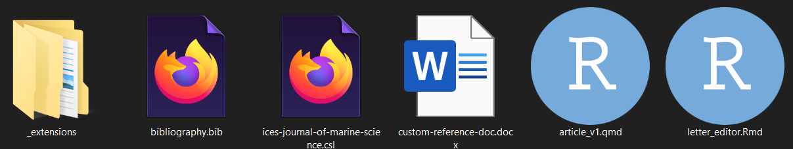
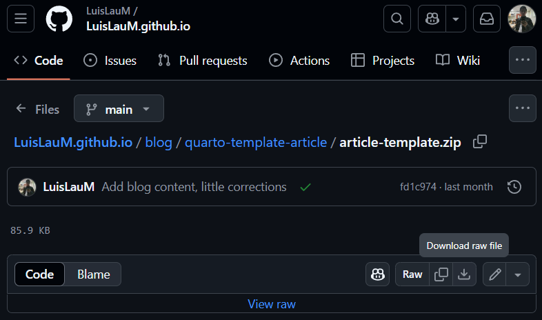
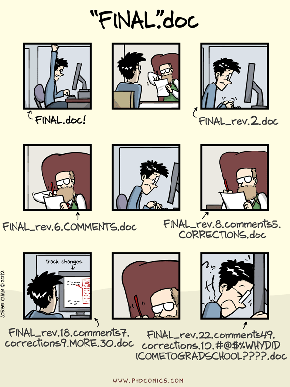

knitr::opts_chunk$set(echo = FALSE,
verbose = FALSE,
message = FALSE,
warning = FALSE,
dev = "ragg_png",
out.width = "100%",
dpi = 1500)Image credits: Daria Glakteeva at Unplash
[EN] Writing a manuscript just with Quarto and Zotero (and R)
This tutorial starts from a folder-template containing the files needed to write the complete manuscript for a scientific article (applicable to almost any journal) using only Quarto, RStudio, Zotero and R tools. In this example, the output will always be a file in MS Word format, which is widely accepted by several scientific journals. In the following, I will indicate the list of required software (which you should already have installed) and then I will explain the use and handling of each file contained in the template.

Pre-requisites
- Reference template link: There you will find the files needed to execute what is shown in this post, which may change as this post is updated. You must click on the
View rawlink or theDownload raw filebutton.

R, RStudio y Zotero: https://cran.r-project.org/ / https://posit.co/downloads/ / https://www.zotero.org/
Quarto: In recent years, RStudio already includes a recent version of Quarto, but if you do not have the software or want to try versions other than the default, you can download them from https://quarto.org/docs/download/index.html.
Zotero-Quarto-RStudio integration: Citation management will make use of the tools explained in my previous post, so I recommend you to read and do what is explained there.
Some experience in writing documents using Quarto (or R markdown). The best way to learn how to use Quarto is using it and find what you need to get what you need from online manuals (e.g. from Quarto), videos on YT or questions on several forums (e.g. Stackoverflow) and blogs.
TipFiles and order
Although each researcher has a different way of organizing the files of their projects, it is HIGHLY recommended to work each one within the same folder (where we have configured an RStudio project), where there are separate folders for raw data, preprocessed data, output data, figures, code, external documents (reports, permissions, etc.), presentations, among others. For our example, it will be assumed that we are working in the root directory of our project itself, but ideally we should have a subfolder in dedicated to contain only the files related to the article (or articles) coming out of a project. This will be quite useful later on when revisions start coming in and not end up with dozens of confusingly named files scattered around our directory.

_extensions folder
Quarto extensions are basically scripts that add additional functionality and are developed and supported by the community. Quarto has a standalone environment philosophy, so, unlike R, the installation of the extensions must be done local in each project where we are going to run our Quarto script. For the purposes of this post, we are going to use an extension called kapsner/authors-block, which is already included in the reference repository (inside the /_extensions folder), but it is always good to take a look at the original repository to see if they have incorporated any interesting improvements.
bibliography.bib file
This file will contain the metadata of the bibliographic references that we will cite in our main file. It is not necessary to create it manually, that will be taken care of by the Zotero-rbbt tools, as detailed in our respective post.
ices-journal-of-marine-science.csl file
A CSL (Citation Style Language) file defines how citations and references should be formatted in a document, allowing bibliographic management programs (such as Zotero) to automate this process. These files are essential in writing scientific articles because they ensure that citations and references conform precisely to the style standards required by a journal or institution, such as APA, MLA or Vancouver. By using a CSL file, authors can easily switch between styles without having to manually rewrite their references, which saves time, reduces errors, and ensures consistency in citation formatting throughout the paper.
Usually, each journal tells authors which style to follow when writing their citations, for which in many cases they share the respective .csl file; however, if we cannot find the correct file, there are repositories such as this one where hundreds of .csl files for different journals are stored and maintained. Look for the one that best fits the journal to which you will submit your manuscript.
custom-reference-doc.docx file
Usually, a manuscript file does not need to have an ornate or sophisticated format, but it is possible that some journals, our advisor or reviewers may request some formatting details in our MS Word output file. This is where Quarto makes use of a simple but powerful solution: the use of a reference file-format.
The custom-reference-doc.docx file is nothing more than a Word file that explicitly shows how each element will be displayed according to the style we have chosen. Anything we edit in this file will be used by Quarto to format our final document. To explain at length how to edit this file would take a whole post and right now there are many sources where this process is already explained, this post for example. What is important to keep in mind is that every change we make must be done at the level of MS Word’s Format and Style options. While it might seem very annoying to have to work in Word, the good news is that it is not something we will do continuously, but only a couple of times during our project (if someone requests some special formatting in our manuscript). Personally, the shared file has been enough for my advisors, the reviewers and editors of 2 different journals (ICES JMS and Fisheries Research of Elsevier).
Tip
This style reference file can be very useful for adding features that might be somewhat difficult to obtain from markdown or LaTeX commands. For example, if you want your final document to include numbered lines, it is as simple as do it from Word in this document style reference. Quarto will take the change and apply it to the output file.
The main file: article_v1.qmd
The initial part of the script of this template consists of a header (in YAML format) where the general options of our document will be shown:
title, between double quotes" ".authors, where we will be able to include data such as names, surnames and affiliation (which is the most important information), as well as ORCID code, reference URL, etc.affiliations, this is where we will indicate an identifier (which we will use as a reference for the authors) and the full name of the affiliation, as we want it to appear in the document.filters, where we will list the Quarto extensions that we want to be loaded at the beginning of the document (and that will be looked for in the/_extensionsfolder).link-citations, where we can define (true/false) if we want the bibliographic citations in the final document to link to the corresponding reference in the final Bibliography section.bibliography, where we will indicate the file where our bibliographic references are in BibTeX format.csl, where we indicate the file that Quarto will use to establish the citation format for bibliographic references.format, where specific parameters of the output file will be specified. For this example, everything is set to get a MS Word file (.docx) that will use ourcustom-reference-doc.docxstyle reference file. Thetocparameter (which refers to Table Of Contents) allows to display or not the table of contents at the beginning of the document. Thenumer-sectionsparameter allows to enable/disable the use of numbering in the sections of our manuscript.
Setup chunk
The chunk shown at the beginning of the qmd file contains some parameters that should be set, so that you do not have to do it independently in each subsequent chunk. Hey, this is a SUGGESTED configuration, you can (and should) modify it as required by your project or the reviewers.
echo = FALSE: Causes the executed code NOT to be displayed verbatim in the document.verbose = FALSE: Useful for suppressing detailed messages about progress, intermediate steps or partial results of code within chunks to keep outputs cleaner.message = FALSE/warning = FALSE: used to suppress warning messages or information that functions may generate during code execution, preventing them from appearing in the document output. This helps to keep the output cleaner and focused on the essential results.dev = "ragg_png": specifies that the graphics device used to generate the images is ragg, an efficient and modern engine that produces graphics in PNG format with high quality and performance.out.width = "100%": sets that the width of the generated images or graphics will occupy 100% of the width of the container (e.g., the page or column where it is displayed), automatically adjusting to the available size.dpi = 1500: sets the resolution of the images generated in the document, specifically in dots per inch. A value of 1500 dpi indicates a very high resolution, which results in sharper and more detailed images, but also heavier, so it will be the user’s responsibility to determine the optimum value as specified by each magazine.
Writing in Quarto
What follows is basically to write our manuscript as if it were just another report in Quarto, taking advantage of the power of chunks to recreate the analyses needed to generate each figure, table or value. Here it is important to recommend that each value that comes from an analysis of our information (i.e. that does not come directly from a bibliographic citation) should be generated from explicit code in our document.
For example, let us imagine that I am working with the mtcars table (from R) and I want to write the following text-result:
The car models Toyota Corolla and Fiat 128 were those with the highest miles per gallon value.
The text inside our qmd file should look like this:
The car models `r rownames(mtcars)[order(mtcars$mpg, decreasing = TRUE)[1:2]] |> paste(collapse = " and ")` were those with the highest miles per gallon value.As you can see, within the paragraph itself I am running a chunk with a data sorting and extraction operation. While this may seem more cumbersome, it allows that if at some point we were to modify some pre-processing process of the initial data, the results will be generated automatically, without the need for us to do these small calculations again.
Important
Obviously, the texts related to the interpretation of the results should be reviewed whenever we know that we have made an important change in our initial data.
There are multiple websites (blogs and forums) where we can learn how to format our results or presentation. Some examples are:
Quarto Q&A. This site is particularly interesting because it is the Q&A section of the Quarto repository itself, so it is always good to take a look at its search engine and check if someone else had similar difficulties as us. We can also leave a ticket with our query if we don’t find a match.
Extra file: letter_editor.Rmd
The letter to the editor is a key component when submitting a scientific article to a journal, as it serves as a first presentation of the work to the editors and helps to highlight its relevance, originality and contribution to the field. Its usefulness lies in quickly capturing the editor’s attention by summarizing the objectives, main findings and importance of the study, which facilitates the initial evaluation of the manuscript. In addition, it allows the author to briefly explain why the article is appropriate for the journal in question, showing alignment with its focus and audience. A well-written letter can positively influence the editor’s decision to send the article for review, thus expediting the evaluation process.
Although in this template I do not share an example of writing this letter (only the R markdown format), it is possible to find multiple related posts in various forums or blogs. The use of this file is quite intuitive, just fill in the fields and render the document. By the way, it requires the prior installation of the komaletter package.
[ES] Escribiendo un artículo solo con Quarto y Zotero (y R)
Este tutorial parte de una carpeta-plantilla en donde están los archivos necesarios para escribir el manuscrito completo para un artículo científico (aplicable a casi cualquier revista) usando únicamente herramientas de Quarto, RStudio, Zotero y R. En este ejemplo, el output será siempre un archivo en formato MS Word, que es ampliamente aceptado por diversas revistas científicas. A continuación, indicaré la lista de software requerido (que debn tener ya instalado) y luego iré explicando el uso y manejo de cada archivo contenido en la plantilla.
Requerimientos
- Plantilla de referencia link: Ahí se encuentran los archivos necesarios para ejecutar lo mostrado en este post, los cuales podrán ir variando conforme este post se actualice. Deberás dar click al link de
View rawo bien al botón deDownload raw file.
R, RStudio y Zotero: https://cran.r-project.org/ / https://posit.co/downloads/ / https://www.zotero.org/
Quarto: En los últimos años, RStudio ya incluye una versión reciente de Quarto, pero si usted no cuenta con el software o desea probar versiones distintas a la que llega por defecto, puede descargarlas desde https://quarto.org/docs/download/index.html.
Integración Zotero-Quarto-RStudio: El manejo de citas se debe hacer a través de las herramientas explicadas en mi post anterior, así que les recomiendo leerlo previamente e implementar lo explicado ahí.
Experiencia en la escritura de documentos usando Quarto (o R markdown). La mejor manera de aprender a usar Quarto es usándolo e ir hallando lo necesario para obtener lo que necesitamos a partir de manuales en línea (e.g. desde la propia web de Quarto), vídeos en YT o preguntas en diversos foros (e.g. Stackoverflow).
TipArchivos, orden y modo de trabajo
Si bien cada investigador tiene una manera distinta de organizar los archivos de sus proyectos, es MUY recomendable trabajar cada uno dentro de una misma carpeta (en donde tengamos configurado un proyecto de RStudio), en donde haya carpetas diferenciadas para los datos de entrada en bruto (raw), los preprocesados, los de salida, las figuras, el código, los documentos externos (informes, permisos, etc.), las presentaciones, entre otros. Para nuestro ejemplo, se asumirá que estamos trabajando en el propio directorio raíz de nuestro proyecto, pero idealmente deberíamos tener una subcarpeta en dedicada a contener únicamente los archivos relacionados al artículo (o artículos) que salen de un proyecto. Esto será bastante útil posteriormente, cuando empiecen a llegar las revisiones y no terminar con decenas de archivos con nombre confusos y desperdigados por nuestro directorio.
Carpeta _extensions
Las extensiones de Quarto son básicamente scripts que añaden funcionalidades adicionales y que son desarrolladas y soportadas por la comunidad. Quarto maneja una filosofía de entornos independientes, por lo que, a diferencia de R, la instalación de las extensiones de hacerse de manera local en cada proyecto en que vayamos a ejecutar nuestro script de Quarto. Para efectos del presente post, vamos a utilizar una extensión llamada kapsner/authors-block, la cual ya viene incluidas en el repositorio de referencia (dentro de la carpeta /_extensions), pero siempre es bueno darse una vuelta por el repositorio original para saber si han incorporado alguna mejora interesante.
Archivo bibliography.bib
Este archivo contendrá la metadata de las referencias bibliográficas que citaremos en nuestro archivo principal. No es necesario crearlo manualmente, de eso se encargará las herramientas de Zotero-rbbt, tal como se detalla en nuestro post respectivo.
Archivo ices-journal-of-marine-science.csl
Un archivo CSL (Citation Style Language) define cómo se deben formatear las citas y las referencias en un documento, permitiendo que programas de gestión bibliográfica (como Zotero) automaticen este proceso. Estos archivos son fundamentales en la escritura de artículos científicos porque garantizan que las citas y referencias se adapten de manera precisa a las normas de estilo exigidas por una revista o institución, como APA, MLA o Vancouver. Al utilizar un archivo CSL, los autores pueden cambiar fácilmente entre estilos sin necesidad de reescribir manualmente sus referencias, lo que ahorra tiempo, reduce errores y asegura la consistencia en el formato de citación a lo largo del documento.
Usualmente, cada revista indica a los autores qué estilo deben seguir al momento de redactar sus citas, para lo cual en muchos casos comparten el respectivo archivo .csl; sin embargo, si no logramos hallar el archivo correcto, existen repositorios como este en donde se almacenan y mantienen cientos de archivos .csl para diferentes revistas. Busca el que más se ajuste a la revista a la que someterás tu manuscrito.
Archivo custom-reference-doc.docx
Usualmente, un archivo de manuscrito no requiere tener un formato ornamentado o sofisticado, pero es posible que algunas revistas, nuestro asesor o los revisores soliciten algunos detalles de formato en nuestro archivo de salida en MS Word. Aquí es donde Quarto hace uso de una solución sencilla, pero potente: el uso de un archivo-formato de referencia.
El archivo custom-reference-doc.docx no es más que un archivo en Word en donde se muestra de forma explícita la manera en cómo se mostrará cada elemento según el estilo que hayamos elegido. Cualquier cosa que editemos en ese archivo será utilizada por Quarto para darle formato a nuestro documento final. Explicar en extenso cómo editar este archivo tomaría un post entero y ahora mismo existen muchas fuentes en donde ya se explica este proceso, este post por ejemplo. Lo que sí es importante tener en cuenta es que cada cambio que hagamos debe hacerse a nivel de las opciones de Formato y Estilo de MS Word. Si bien podría parecer muy molesto tener que trabajar en Word, la buena noticia es que no es algo que haremos continuamente, sino solo un par de veces durante nuestro proyecto (si es que alguien solicita algún formato especial en nuestro manuscrito). En lo personal, con el archivo compartido ha sido suficiente para mis asesores, los revisores y editores de 2 revistas distintas (ICES JMS y Fisheries Research de Elsevier).
Tip
Este archivo de referencia de estilo puede llegar a ser muy útil para añadir aspectos que podrían llegar a ser algo difíciles de obtener desde comandos en markdown o LaTeX. Por ejemplo, si desea que su documento final incluya líneas numeradas, es tan sencillo como hacerlo desde Word en este documento de referencia de estilo. Quarto tomará el cambio y lo aplicará sobre el archivo de salida.
Archivo principal article_v1.qmd
La parte inicial del script de esta plantilla se compone un header (en formato YAML) en donde se mostrará las opciones generales de nuestro documento:
title, entre comillas dobles" ".authors, en donde podremos incluir datos como nombres, apellidos y afiliación (que es la información más importante), así como código ORCID, URL de referencia, etc.affiliations, aquí es donde indicaremos un identificador (que usaremos como referencia para los autores) y el nombre (name) completo de la afiliación, tal como querramos que aparezca en el documento.filters, en donde listaremos las Quarto extensions que deseamos que se carguen al inicio del documento (y que se buscarán en la carpeta/_extensions).link-citations, en donde podremos definir (true/false) si deseamos que las citas bibliográficas en el documento final se enlacen a la referencia correspondiente en la sección final de Bibliografía.bibliography, en donde indicaremos el archivo en donde se hallan nuestras referencias bibliográficas en formato BibTeX.csl, en donde indicaremos el archivo que utilizará Quarto para establecer el formato de citación de referencias bibliográficas.format, en donde se indicará parámetros específicos del archivo de salida. Para este ejemplo, todo está configurado para obtener un archivo en MS Word (.docx) que utilizará nuestro archivo de referencia de estilocustom-reference-doc.docx. El parámetrotoc(que hace referencia a Table Of Contents) permite mostrar o no la tabla de contenidos al inicio del documento. El parámetronumer-sectionspermite activar/desactivar el uso de numeración en las secciones de nuestro manuscrito.
Setup chunk
El chunk que se muestra al inicio del archivo qmd contiene algunos parámetros que conviene fijar, para no tener que hacerlo independientemente en cada chunk posterior. Ojo, esta es una configuración SUGERIDA, usted podrá (y deberá) modificarla según lo requiera su proyecto o los revisores.
knitr::opts_chunk$set(echo = FALSE,
verbose = FALSE,
message = FALSE,
warning = FALSE,
dev = "ragg_png",
out.width = "100%",
dpi = 1500)echo = FALSE: Hace que el código ejecutado NO se muestre textualmente en el documento.verbose = FALSE: Útil para suprimir mensajes detallados sobre el progreso, los pasos intermedios o los resultados parciales del código dentro de los chunks y mantener salidas más limpias.message = FALSE/warning = FALSE: se utiliza para suprimir los mensajes de advertencia o información que las funciones pueden generar durante la ejecución del código, evitando que estos aparezcan en la salida del documento. Esto ayuda a mantener la salida más limpia y enfocada en los resultados esenciales.dev = "ragg_png": especifica que el dispositivo gráfico utilizado para generar las imágenes es ragg, un motor eficiente y moderno que produce gráficos en formato PNG con alta calidad y rendimiento.out.width = "100%": establece que el ancho de las imágenes o gráficos generados ocupará el 100% del ancho del contenedor (por ejemplo, la página o columna donde se muestra), ajustándose automáticamente al tamaño disponible.dpi = 1500: establece la resolución de las imágenes generadas en el documento, específicamente en puntos por pulgada (dots per inch). Un valor de 1500 dpi indica una resolución muy alta, lo que resulta en imágenes más nítidas y detalladas, pero también más pesadas, por lo que será responsabilidad del usuario determinar el valor óptimo junto a lo especificado por cada revista.
Redactar en Quarto
Lo que sigue es básicamente redactar nuestro manuscrito somo si se tratara de un reporte más en Quarto, aprovechando el poder de los chunks para recrear los análisis necesarios para generar cada figura, tabla o valor. Aquí es importante recomendar que cada valor que provenga de un análisis de nuestra información (i.e. que no provenga diractamente de una cita bibliográfica) debe ser generado a partir de código explícito en nuestro documento.
Por ejemplo, imaginemos que estoy trabajando con la tabla mtcars (de R) y deseo redactar el siguiente texto-resultado:
Los modelos Toyota Corolla y Fiat 128 fueron aquellos con mayor valor de millas por galón.
El texto dentro de nuestro archivo qmd dbería lucir del siguiente modo:
Los modelos `r rownames(mtcars)[order(mtcars$mpg, decreasing = TRUE)[1:2]] |> paste(collapse = " y ")` fueron los que mostraron los primeros según la variable de millas por galón.Como se observa, dentro del propio párrafo estoy ejecutando un chunk con una operación de ordenamiento y extracción de datos. Si bien esto puede parecer más engorroso, permite que si en algún momento tuviéramos que modificar algún proceso de preprocesamiento de los datos iniciales, los resultados se generarán automáticamente, sin necesidad de que tengamos que volver a hacer estos pequeños cálculos nuevamente.
Important
Evidentemente, los textos relacionados a la interpretación de los resultados deben ser revisados cada vez que sepamos que hemos realizado un cambio importante en nuestros datos iniciales.
Existen múltiples sitios web (blogs y foros) en donde podemos aprender a darle el formato que nuestros resultados o presentación requieren. Algunos ejemplos son:
Quarto Q&A. Este sitio es particularmente interesante porque se trata de la sección de Q&A del propio repositorio de Quarto, por lo que siempre es bueno darnos una vuelta por su buscador y revisar si alguien más tuvo similares dificultades que nosotros. Así mismo, podemos dejar un ticket con nuestra consulta si es que no encontramos coincidencias.
Archivo adicional letter_editor.Rmd
La carta al editor es un componente clave al someter un artículo científico a una revista, ya que sirve como una primera presentación del trabajo a los editores y ayuda a destacar su relevancia, originalidad y contribución al campo. Su utilidad radica en captar rápidamente la atención del editor al resumir los objetivos, los principales hallazgos y la importancia del estudio, lo que facilita la evaluación inicial del manuscrito. Además, permite al autor explicar brevemente por qué el artículo es adecuado para la revista en cuestión, mostrando alineación con su enfoque y audiencia. Una carta bien redactada puede influir positivamente en la decisión del editor de enviar el artículo a revisión, agilizando así el proceso de evaluación.
Si bien en esta plantilla no comparto un ejemplo de redacción de esta carta (solo el formato en R markdown), es posible hallar múltiples post relacionados en diversos foros o blogs. El uso de este archivo es bastante intuitivo, solo basta con rellenar los campos y renderizar el documento. Por cierto, se requiere la instalación previa del paquete komaletter.